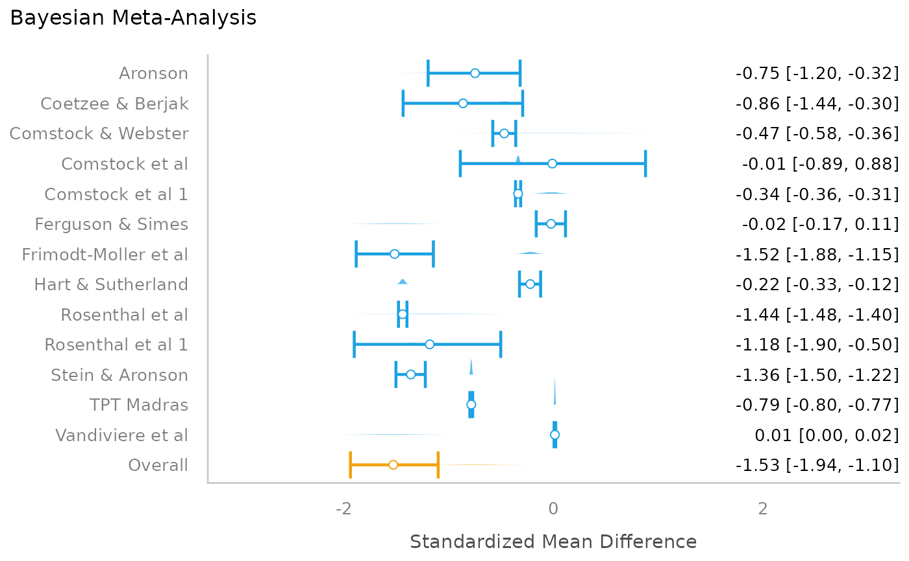

Plot method for Model Parameters from Bayesian Meta-Analysis
Source:R/plot.parameters_brms_meta.R
plot.see_parameters_brms_meta.RdThe plot() method for the parameters::model_parameters()
function when used with brms-meta-analysis models.
Usage
# S3 method for see_parameters_brms_meta
plot(
x,
size_point = 2,
size_line = 0.8,
size_text = 3.5,
posteriors_alpha = 0.7,
rope_alpha = 0.15,
rope_color = "cadetblue",
normalize_height = TRUE,
show_labels = TRUE,
...
)Arguments
- x
An object.
- size_point
Numeric specifying size of point-geoms.
- size_line
Numeric value specifying size of line geoms.
- size_text
Numeric value specifying size of text labels.
- posteriors_alpha
Numeric value specifying alpha for the posterior distributions.
- rope_alpha
Numeric specifying transparency level of ROPE ribbon.
- rope_color
Character specifying color of ROPE ribbon.
- normalize_height
Logical. If
TRUE, height of mcmc-areas is "normalized", to avoid overlap. In certain cases when the range of a posterior distribution is narrow for some parameters, this may result in very flat mcmc-areas. In such cases, setnormalize_height = FALSE.- show_labels
Logical. If
TRUE, text labels are displayed.- ...
Arguments passed to or from other methods.
Details
Colors of density areas and errorbars
To change the colors of the density areas, use scale_fill_manual()
with named color-values, e.g. scale_fill_manual(values = c("Study" = "blue", "Overall" = "green")).
To change the color of the error bars, use scale_color_manual(values = c("Errorbar" = "red")).
Examples
# \dontrun{
library(parameters)
library(brms)
library(metafor)
data(dat.bcg)
dat <- escalc(
measure = "RR",
ai = tpos,
bi = tneg,
ci = cpos,
di = cneg,
data = dat.bcg
)
dat$author <- make.unique(dat$author)
# model
set.seed(123)
priors <- c(
prior(normal(0, 1), class = Intercept),
prior(cauchy(0, 0.5), class = sd)
)
model <- brm(yi | se(vi) ~ 1 + (1 | author), data = dat)
#> Compiling Stan program...
#> Start sampling
#>
#> SAMPLING FOR MODEL 'anon_model' NOW (CHAIN 1).
#> Chain 1:
#> Chain 1: Gradient evaluation took 1.7e-05 seconds
#> Chain 1: 1000 transitions using 10 leapfrog steps per transition would take 0.17 seconds.
#> Chain 1: Adjust your expectations accordingly!
#> Chain 1:
#> Chain 1:
#> Chain 1: Iteration: 1 / 2000 [ 0%] (Warmup)
#> Chain 1: Iteration: 200 / 2000 [ 10%] (Warmup)
#> Chain 1: Iteration: 400 / 2000 [ 20%] (Warmup)
#> Chain 1: Iteration: 600 / 2000 [ 30%] (Warmup)
#> Chain 1: Iteration: 800 / 2000 [ 40%] (Warmup)
#> Chain 1: Iteration: 1000 / 2000 [ 50%] (Warmup)
#> Chain 1: Iteration: 1001 / 2000 [ 50%] (Sampling)
#> Chain 1: Iteration: 1200 / 2000 [ 60%] (Sampling)
#> Chain 1: Iteration: 1400 / 2000 [ 70%] (Sampling)
#> Chain 1: Iteration: 1600 / 2000 [ 80%] (Sampling)
#> Chain 1: Iteration: 1800 / 2000 [ 90%] (Sampling)
#> Chain 1: Iteration: 2000 / 2000 [100%] (Sampling)
#> Chain 1:
#> Chain 1: Elapsed Time: 1.505 seconds (Warm-up)
#> Chain 1: 1.747 seconds (Sampling)
#> Chain 1: 3.252 seconds (Total)
#> Chain 1:
#>
#> SAMPLING FOR MODEL 'anon_model' NOW (CHAIN 2).
#> Chain 2:
#> Chain 2: Gradient evaluation took 1.2e-05 seconds
#> Chain 2: 1000 transitions using 10 leapfrog steps per transition would take 0.12 seconds.
#> Chain 2: Adjust your expectations accordingly!
#> Chain 2:
#> Chain 2:
#> Chain 2: Iteration: 1 / 2000 [ 0%] (Warmup)
#> Chain 2: Iteration: 200 / 2000 [ 10%] (Warmup)
#> Chain 2: Iteration: 400 / 2000 [ 20%] (Warmup)
#> Chain 2: Iteration: 600 / 2000 [ 30%] (Warmup)
#> Chain 2: Iteration: 800 / 2000 [ 40%] (Warmup)
#> Chain 2: Iteration: 1000 / 2000 [ 50%] (Warmup)
#> Chain 2: Iteration: 1001 / 2000 [ 50%] (Sampling)
#> Chain 2: Iteration: 1200 / 2000 [ 60%] (Sampling)
#> Chain 2: Iteration: 1400 / 2000 [ 70%] (Sampling)
#> Chain 2: Iteration: 1600 / 2000 [ 80%] (Sampling)
#> Chain 2: Iteration: 1800 / 2000 [ 90%] (Sampling)
#> Chain 2: Iteration: 2000 / 2000 [100%] (Sampling)
#> Chain 2:
#> Chain 2: Elapsed Time: 1.547 seconds (Warm-up)
#> Chain 2: 2.035 seconds (Sampling)
#> Chain 2: 3.582 seconds (Total)
#> Chain 2:
#>
#> SAMPLING FOR MODEL 'anon_model' NOW (CHAIN 3).
#> Chain 3:
#> Chain 3: Gradient evaluation took 1e-05 seconds
#> Chain 3: 1000 transitions using 10 leapfrog steps per transition would take 0.1 seconds.
#> Chain 3: Adjust your expectations accordingly!
#> Chain 3:
#> Chain 3:
#> Chain 3: Iteration: 1 / 2000 [ 0%] (Warmup)
#> Chain 3: Iteration: 200 / 2000 [ 10%] (Warmup)
#> Chain 3: Iteration: 400 / 2000 [ 20%] (Warmup)
#> Chain 3: Iteration: 600 / 2000 [ 30%] (Warmup)
#> Chain 3: Iteration: 800 / 2000 [ 40%] (Warmup)
#> Chain 3: Iteration: 1000 / 2000 [ 50%] (Warmup)
#> Chain 3: Iteration: 1001 / 2000 [ 50%] (Sampling)
#> Chain 3: Iteration: 1200 / 2000 [ 60%] (Sampling)
#> Chain 3: Iteration: 1400 / 2000 [ 70%] (Sampling)
#> Chain 3: Iteration: 1600 / 2000 [ 80%] (Sampling)
#> Chain 3: Iteration: 1800 / 2000 [ 90%] (Sampling)
#> Chain 3: Iteration: 2000 / 2000 [100%] (Sampling)
#> Chain 3:
#> Chain 3: Elapsed Time: 1.462 seconds (Warm-up)
#> Chain 3: 1.809 seconds (Sampling)
#> Chain 3: 3.271 seconds (Total)
#> Chain 3:
#>
#> SAMPLING FOR MODEL 'anon_model' NOW (CHAIN 4).
#> Chain 4:
#> Chain 4: Gradient evaluation took 1e-05 seconds
#> Chain 4: 1000 transitions using 10 leapfrog steps per transition would take 0.1 seconds.
#> Chain 4: Adjust your expectations accordingly!
#> Chain 4:
#> Chain 4:
#> Chain 4: Iteration: 1 / 2000 [ 0%] (Warmup)
#> Chain 4: Iteration: 200 / 2000 [ 10%] (Warmup)
#> Chain 4: Iteration: 400 / 2000 [ 20%] (Warmup)
#> Chain 4: Iteration: 600 / 2000 [ 30%] (Warmup)
#> Chain 4: Iteration: 800 / 2000 [ 40%] (Warmup)
#> Chain 4: Iteration: 1000 / 2000 [ 50%] (Warmup)
#> Chain 4: Iteration: 1001 / 2000 [ 50%] (Sampling)
#> Chain 4: Iteration: 1200 / 2000 [ 60%] (Sampling)
#> Chain 4: Iteration: 1400 / 2000 [ 70%] (Sampling)
#> Chain 4: Iteration: 1600 / 2000 [ 80%] (Sampling)
#> Chain 4: Iteration: 1800 / 2000 [ 90%] (Sampling)
#> Chain 4: Iteration: 2000 / 2000 [100%] (Sampling)
#> Chain 4:
#> Chain 4: Elapsed Time: 1.674 seconds (Warm-up)
#> Chain 4: 1.738 seconds (Sampling)
#> Chain 4: 3.412 seconds (Total)
#> Chain 4:
#> Warning: There were 1 divergent transitions after warmup. See
#> https://mc-stan.org/misc/warnings.html#divergent-transitions-after-warmup
#> to find out why this is a problem and how to eliminate them.
#> Warning: There were 48 transitions after warmup that exceeded the maximum treedepth. Increase max_treedepth above 10. See
#> https://mc-stan.org/misc/warnings.html#maximum-treedepth-exceeded
#> Warning: Examine the pairs() plot to diagnose sampling problems
# result
mp <- model_parameters(model)
plot(mp)

# }